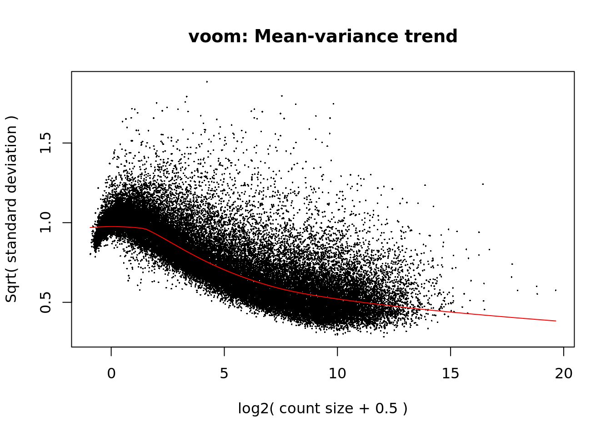
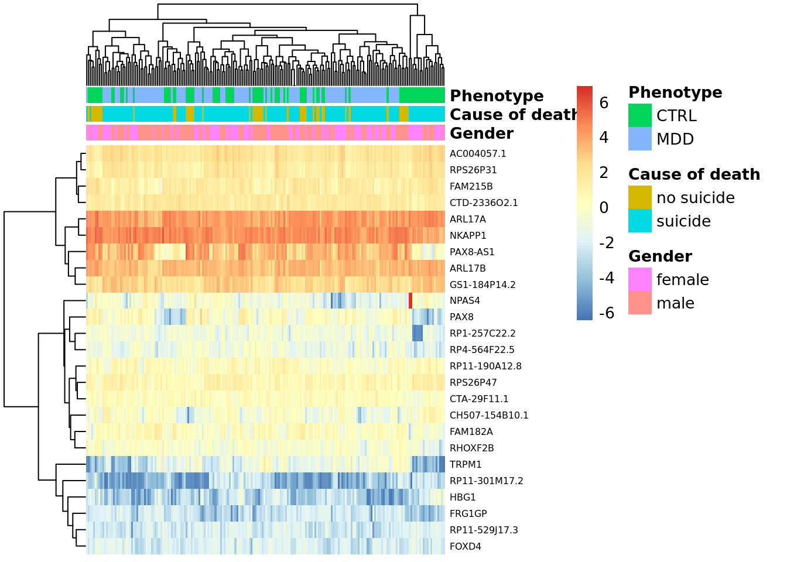

Chapter 7 Expresión diferencial
A continuación, se realizó un análisis mediante gráficas de tipo boxplot, el cual es útil para visualizar la diferencia entre la expresión de las muestras bajo distintas condiciones. Analicé la diferencia de expresión entre las muestras que tenían MDD y las que no; las muestras de mujeres y las de hombres; y entre individuos que se suicidaron y los que murieron de otras formas. Existe poca diferencia entre la expresión diferencial de cada uno de los casos, por lo que un análisis más exhaustivo es necesario.
# Importa una libreria para generar boxplot
library("ggplot2")
# Grafica la expresion diferencial entre las condiciones MDD y no MDD
ggplot(as.data.frame(colData(rse_gene)), aes(y = assigned_gene_prop, x = sra_attribute.phenotype)) +
geom_boxplot() +
theme_bw(base_size = 20) +
ylab("Assigned Gene Prop") +
xlab("Phenotype")
# Grafica la expresion diferencial entre las condiciones hombre y mujer
ggplot(as.data.frame(colData(rse_gene)), aes(y = assigned_gene_prop, x = sra_attribute.gender)) +
geom_boxplot() +
theme_bw(base_size = 20) +
ylab("Assigned Gene Prop") +
xlab("Gender")
# Grafica la expresion diferencial entre las condiciones suicida y no suicida
ggplot(as.data.frame(colData(rse_gene)), aes(y = assigned_gene_prop, x = death)) +
geom_boxplot() +
theme_bw(base_size = 20) +
ylab("Assigned Gene Prop") +
xlab("Cause of death")
Generé el modelo estadistico de acuerdo a las variables previamente mencionadas. Además, señalo a cuál instancia de las variables apuntan cada análisis. Estas instancias son MDD, hombre y suicida, respectivamente.
# Generar el modelo linear estadistico
mod <- model.matrix(~ sra_attribute.phenotype + sra_attribute.gender + death + assigned_gene_prop,
data = colData(rse_gene))
# Observar las variables que componen el modelo
colnames(mod)## [1] "(Intercept)" "sra_attribute.phenotypeMDD"
## [3] "sra_attribute.gendermale" "deathsuicide"
## [5] "assigned_gene_prop"Usando un modelo de regresión lineal, es posible obtener estimados de la desviación estandar. La siguiente gráfica sintetiza las desviaciones estándar y valor de expresión logarítmica para cada gen. La forma que toma la curva roja indica que los datos son lo suficientemente robustos como para avanzar en el análisis.
# Generar la grafica para visualizar la desviacion estandar
library("limma")
vGene <- voom(dge, mod, plot = TRUE)
Ahora, genero el modelo de la regresión lineal y muestro la cantidad de genes que poseen una expresión diferencial significativa. El resultado son 28 de 63,828 genes.
# Generar el modelo de regresion lineal
eb_results <- eBayes(lmFit(vGene))
# Indicar el coeficiente del modelo, que en este caso es la variable de interes
de_results <- topTable(
eb_results,
coef = 2,
number = nrow(rse_gene),
sort.by = "none"
)
# Mostrar los genes diferencialmente expresados entre control y MDD con FDR < 5%
table(de_results$adj.P.Val < 0.05)##
## FALSE TRUE
## 46827 38Ahora, utilizo una gráfica con la cual puedo visualizar el cambio en los niveles de expresión entre las muestras MDD y no MDD. Los valores positivos indican que la expresión es mas alta en el caso MDD y los valores negativos indican que es más alto en el caso no MDD.
# Visualizar los resultados estadísticos
plotMA(eb_results, coef = 2)
Mediante el uso de una gráfica de tipo volcano, se indican los genes con mayor expresión diferencial y con mejor valor de p-value.
volcanoplot(eb_results, coef = 2, highlight = 5, names = de_results$gene_name)
A continuación, se muestra la información de los genes con mayor expresión diferencial. Es importante remarcar que hay dos genes llamados TRPM1, pero el significativo solo es uno.
# Mostrar la informacion de los genes
de_results[de_results$gene_name %in% c("PAX8-AS1", "TRPM1", "FAM182A", "PAX8", "NKAPP1"), ]## source type score phase gene_id
## ENSG00000134160.13 HAVANA gene 7454 NA ENSG00000134160.13
## ENSG00000189223.14 HAVANA gene 17274 NA ENSG00000189223.14
## ENSG00000125618.16 HAVANA gene 7400 NA ENSG00000125618.16
## ENSG00000125804.13 HAVANA gene 5787 NA ENSG00000125804.13
## ENSG00000233382.6 HAVANA gene 3222 NA ENSG00000233382.6
## gene_type gene_name level
## ENSG00000134160.13 protein_coding TRPM1 1
## ENSG00000189223.14 processed_transcript PAX8-AS1 1
## ENSG00000125618.16 protein_coding PAX8 1
## ENSG00000125804.13 processed_transcript FAM182A 2
## ENSG00000233382.6 transcribed_processed_pseudogene NKAPP1 2
## havana_gene tag logFC AveExpr
## ENSG00000134160.13 OTTHUMG00000129267.5 ncRNA_host 1.8618999 -1.7911180
## ENSG00000189223.14 OTTHUMG00000153340.8 overlapping_locus 1.5808862 2.9641547
## ENSG00000125618.16 OTTHUMG00000128529.11 <NA> 1.4852405 -0.3744210
## ENSG00000125804.13 OTTHUMG00000032144.2 <NA> 0.7455656 0.2053713
## ENSG00000233382.6 OTTHUMG00000022295.5 overlapping_locus 0.3678170 4.5605076
## t P.Value adj.P.Val B
## ENSG00000134160.13 5.821262 2.323090e-08 0.0004207514 6.828719
## ENSG00000189223.14 5.869610 1.813457e-08 0.0004207514 9.003623
## ENSG00000125618.16 5.225435 4.386866e-07 0.0045123406 5.387529
## ENSG00000125804.13 5.792264 2.693384e-08 0.0004207514 8.186189
## ENSG00000233382.6 5.121715 7.154427e-07 0.0045123406 5.639558En la siguiente gráfica de tipo heatmap se observa la expresión de los genes dependiendo de todas las condiciones que se analizaron en el modelo. La información solo se extrajo de los primeros 25 genes mas significativos.
# Extraer valores de los genes de interes
exprs_heatmap <- vGene$E[rank(de_results$adj.P.Val) <= 25, ]
# Crear una tabla con informacion de las muestras y con nombres de columnas mas amigables
df <- as.data.frame(colData(rse_gene)[,
c("sra_attribute.gender", "death", "sra_attribute.phenotype")])
colnames(df) <- c("Gender", "Cause of death", "Phenotype")
# Indicar el nombre de cada uno de los genes
rownames(exprs_heatmap) <- rowRanges(rse_gene)$gene_name[match(rownames(exprs_heatmap), rownames(rse_gene))]
# Importar la libreria requerida para graficar el heatmap
library("pheatmap")
# Crear el heatmap
pheatmap(
exprs_heatmap,
cluster_rows = TRUE,
cluster_cols = TRUE,
show_rownames = TRUE,
show_colnames = FALSE,
annotation_col = df,
fontsize_row = 6,
)
Por último, grafique la expresión diferencial dependiendo de la categoria a la que pertenecen las muestras. En el caso entre mujeres y hombres existe una gran diferencia de genes diferencialmente expresados, como lo indicaban en el estudio. Esto se interpreta gracias a la formación de clusters correspondientes a cada instancia de las variables en la siguiente gráfica.
# Importar una libreria requerida para asignar colores
library("RColorBrewer")
# Convertir los valores de genero a colores
col.gender <- df$Gender
levels(col.gender) <- brewer.pal(nlevels(col.gender), "Set1")## Warning in brewer.pal(nlevels(col.gender), "Set1"): minimal value for n is 3, returning requested palette with 3 different levelscol.gender <- as.character(col.gender)
## MDS por genero
plotMDS(vGene$E, labels = df$Gender, col = col.gender)
Sin embargo, encontre un panorama mucho menos informativo al analizar en el caso entre individuos con y sin MDD, y entre individuos que fueron suicidas y los que no. Se interpreta que no hay muchos genes diferencialmente expresados ya que no se forman clusters correspondientes a cada instancia de la variable. Esto se observa en las siguientes dos gráficas.
## Convertir los valores de MDD a colores
col.phenotype <- df$Phenotype
levels(col.phenotype) <- brewer.pal(nlevels(col.phenotype), "Dark2")## Warning in brewer.pal(nlevels(col.phenotype), "Dark2"): minimal value for n is 3, returning requested palette with 3 different levelscol.phenotype <- as.character(col.phenotype)
## MDS por MDD
plotMDS(vGene$E, labels = df$Phenotype, col = col.phenotype)
## Conviertiendo los valores de Sex a colores
col.death <- df$`Cause of death`
levels(col.death) <- brewer.pal(nlevels(col.death), "Set2")## Warning in brewer.pal(nlevels(col.death), "Set2"): minimal value for n is 3, returning requested palette with 3 different levelscol.death <- as.character(col.death)
## MDS por sexo
plotMDS(vGene$E, labels = df$`Cause of death`, col = col.death)